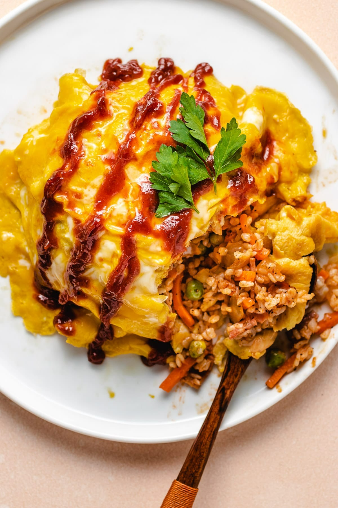

Lasagna

Description
Omurice is runny egg over rice. It is a japanese dish and pretty popular with westerners. It is very delicious. Do not forget the demi-glace.
Basically you first scramble the egg and then let it develop a thin solid layer, then fold it up and plop it on a mound of rice. Then the waiter takes a knife and slices down the middle, making the egg open up and waterfall over your rice (like a volcano!) which makes for a good tiktok video.
Ingredients
- Like 3 eggs
- Pork, beef or chicken rice
- Demi-glace sauce
- Skillet
- Probably chopsticks
Steps
- Put your rice in a neat little mound on your serving dish.
- Crack the eggs into the pan and quickly swirl them with chopsticks, frantically sliding the skillet back and forth.
- When the eggs develop a thin layer at the bottom, tilt the skillet and fold the eggs into a corner of the skillet.
- Flip it using this method. Do this a few times so that the eggs cooks a little more.
- Plop it onto your rice mound and slice the runny egg pocket open
- Enjoy